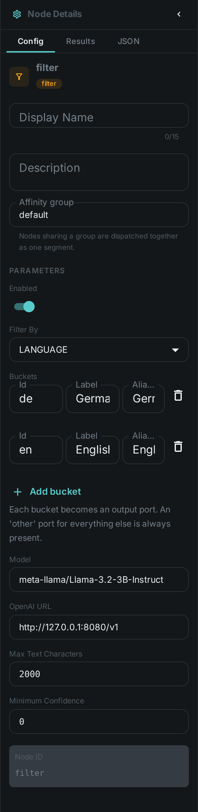
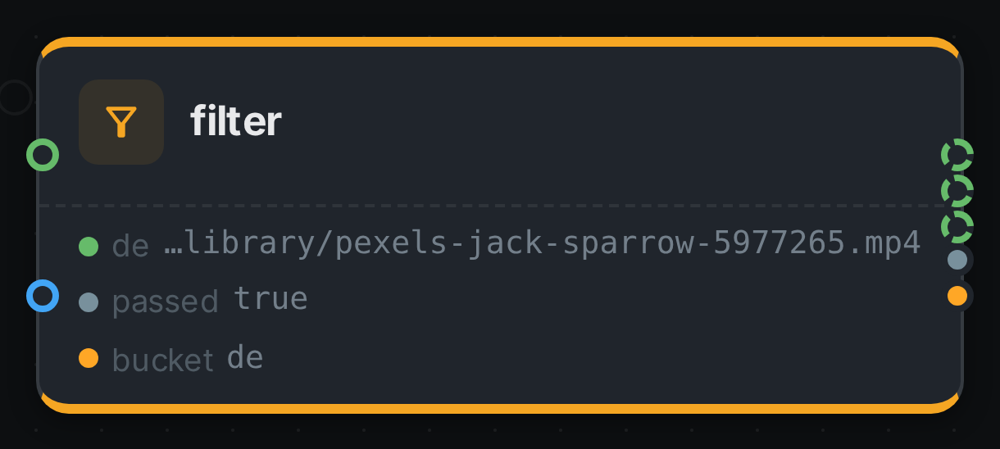

The Filter node is a router. Instead of producing metadata, it decides which group each item belongs to and sends it down the matching branch, so the work you hang off each branch only runs on the items that belong there.
You configure a list of buckets, and the node grows one output port per bucket — plus an
other port that is always present. Wire the ports you care about; that is the whole configuration.
Kind |
|
Applies to |
— (routing; sits between other nodes) |
Input ports |
|
Output ports |
One per configured bucket, plus |
Requirements |
Only |
Persists to |
The routing decision, as a JSON component on the asset |
How routing works
The port is the branch. Each item is written to exactly one bucket port, and anything wired to a port that carried nothing is skipped for that item. Nothing else has to be configured: there is no branch setting on the connection, and no limit of two ways.
Skipping carries down the branch. If a node is skipped because its branch did not fire, everything downstream of it is skipped for that item too — you do not have to repeat the condition at each step.
Two ports behave differently on purpose:
passed-
truewhen the item matched a bucket other thanother. Useful when you want the plain yes/no rather than the group. bucket-
The id of the bucket the item landed in. This port carries a value for every item, so a node wired to it runs whichever way the item went — that is how you record or count the decision without also being routed by it.
In the editor a branch port is drawn with a dashed outline, so you can see at a glance which connections carry every item and which carry only some.
Configuring buckets
Each bucket has:
| Field | Meaning |
|---|---|
Id |
Becomes the output port. Lowercase letters, digits and underscore; typing "Brazilian Portuguese" turns into |
Label |
The name shown on the node. Defaults to the id |
Match |
The hints this bucket matches on, comma separated. What they mean depends on Filter by — other names for a language ( |
Use the Add bucket button to grow a branch, and the delete icon to remove one. The node’s ports follow immediately, and removing a bucket also removes any connections that were hanging off it.
other cannot be used as a bucket id — it is the catch-all and is always there. Neither can
passed, bucket, media or text.
Filtering by
The Filter by setting chooses what the buckets are matched against. Buckets are tried top to bottom and the first one that matches wins, so a narrow bucket above a broad one behaves as written.
| Filter by | Each item goes to the bucket whose… | Match hints look like |
|---|---|---|
Language |
…language matches the text wired into the node |
|
MIME type |
…pattern matches the item’s file type |
|
Size |
…threshold the item’s size falls into |
|
Date |
…window the item’s modification date falls into |
|
Rating |
…range the rating reviewers gave it falls into |
|
Tag |
…tag the item carries |
|
Only Language needs a model. MIME type, Size and Date read the item’s own metadata and add no time per item, so a pipeline that only splits images from video, or last month’s files from last year’s, runs with no model backend at all. Rating and Tag read what people recorded, so they need Metaloom reachable — Tag comes free with the item, Rating costs one lookup that is remembered for the rest of the run.
Language
Language is decided by a language model, which means it needs a reachable OpenAI-compatible endpoint but no
extra model download and no separate service. Wire the text port from whatever produced the text:
a transcript from Whisper, extracted document text from Tika, or
recognised text from OCR.
If the model is unreachable the item fails rather than being quietly routed to other — an item
that could not be classified is not the same as one that did not match. An answer the model gives
that names no configured bucket does land in other, which is what that branch is for.
Set a Minimum confidence to send uncertain classifications to other instead of trusting them.
It applies to Language only; the other three are not guesses.
MIME type
The type comes from the file’s name — holiday.png is image/png. A pattern is an exact type
(image/png), a family (image/), or a bare word read as a family (image means image/). A
bucket with no hints at all falls back to its own id, so three buckets called image, video and
audio route correctly with nothing typed in.
An extension nothing recognises is application/octet-stream, which a bucket can ask for like any
other type.
Size
Sizes are the numbers a file manager shows: KB, MB, GB and TB are 1024-based, and KiB,
MiB, GiB, TiB are accepted as the same thing. A bare number with no unit is bytes.
<, ⇐, > and >= compare; 1MB..100MB is a range whose lower end is included and whose
upper end is not, so neighbouring ranges tile without overlapping; and a bare 10MB means "up to
10MB". That last one is what makes the common ladder read as written:
| Bucket | Match |
|---|---|
|
|
|
|
|
|
Date
The date is the file’s last-modified time. Absolute conditions use ISO dates and always cover the
whole day: ⇐2024-12-31 includes every moment of 31 December, and 2024-01-01..2024-12-31 is the
whole year. A bare 2024-03-17 is that one day.
Relative conditions are ages, and the age prefix is required: age<30d is "changed in the last 30
days" and age>1y is "untouched for over a year". Writing <30d on its own is refused, because it
reads as before while meaning newer than — and getting that backwards would route a whole run the
wrong way. Ages take h, d, w, m (months) and y.
A hint that cannot be read as a threshold or a date — <10 megabytes, last month — stops the
pipeline with a message naming the bucket, rather than starting a run in which every item quietly
lands in other.
Rating
The rating is the one people give in the review screen, 1 to 10. This is what makes reviewing worth the effort: a decision a person made in a few keystrokes decides where the file goes.
>=, >, ⇐ and < compare; 4..7 is a range that includes both ends; and a bare 8 is
exactly 8, not "up to 8". Ratings are ten whole numbers rather than a continuous scale, so an exact
number is what people mean when they type one, and neighbouring ranges like 1..3 and 4..7
already fit together without a gap. The common ladder reads:
| Bucket | Match |
|---|---|
|
|
|
|
|
|
unrated matches an asset nobody has rated. Nothing else does — ⇐2 means "rated 2 or lower", not
"rated low or never looked at", so an un-reviewed backlog is never swept into a low-rating branch by
accident.
When several people have rated the same asset the average decides, rounded to the nearest whole number. Worth knowing: an average moves as more people rate, so an asset can change branch on a later run without anybody changing their mind. Within a single run the answer stays put.
An asset Metaloom does not know about, and one whose ratings could not be read because Metaloom was
unreachable, both go to other — deliberately not to unrated, which would send a well-reviewed
library down the unreviewed branch during an outage. The run continues either way; one item nobody
has ingested does not stop a job over thousands of files.
Tag
Tags are matched by name. An exact name (hero) matches that tag; a trailing matches a prefix,
so person/ catches every tag in that namespace and a bare * means "has any tag at all". A
bucket with no hints falls back to its own id, so three buckets called hero, archive and
rejected route correctly with nothing typed in.
A ! in front excludes: hero, !archive means "tagged hero but not archive". Exclusion always
wins, whatever else matched. A bucket that is only exclusions — !reviewed — matches everything
that does not carry them, which is the "not looked at yet" branch. untagged matches an asset with
no tags at all.
Tag source chooses whose tags count: ANY, MANUAL for only the tags a person attached, or
MACHINE for only those a pipeline attached. That is how you route on what your team decided rather
than on what a model guessed, or the other way round. A tag whose origin was never recorded counts
as a person’s.
As with Rating, an asset Metaloom does not know about goes to other.
Configuration

Seeing it run
Turn on Debug Mode and every node keeps what it produced, on the
card itself. Below is a real run of this node over pexels-jack-sparrow-5977265.mp4.

The strip on the card lists what each output port carried — de, passed, bucket.
Use Cases
-
Language routing — send German transcripts to one summarisation prompt and English ones to another, and everything else to a review branch.
-
Type routing — send images to Captioning and video to Scene Detection from one source, with no model round trip to decide which is which.
-
Cost control by size — run the expensive analysis only on files above a threshold, and a cheap thumbnail path on everything else.
-
Backfill by date — process last month’s arrivals on one branch and the historical archive on another, so a re-run does not redo years of work.
-
Acting on review decisions — publish what reviewers rated 8 or higher, tag what they rated 2 or lower for removal, and tag what nobody has looked at yet so it can be found. This is the
Review Triagepipeline the demo ships. -
Curated versus guessed — route on the tags your team attached with Tag source set to
MANUAL, so a model’s suggestion never triggers a publishing branch. -
Catching the unexpected — wire
otherto a review step and see what your library actually contains. -
Recording the decision — wire
bucketinto Script to count or store which group each item fell into, without changing what else runs.
Notes
-
The node remembers its answer per item for the lifetime of the worker, so re-running a pipeline does not pay for the same classification twice. Changing the buckets or the model counts as a different question and is classified afresh.
-
Two Filter nodes can sit in one pipeline — route by language first, then by something else — and they keep their decisions separate.